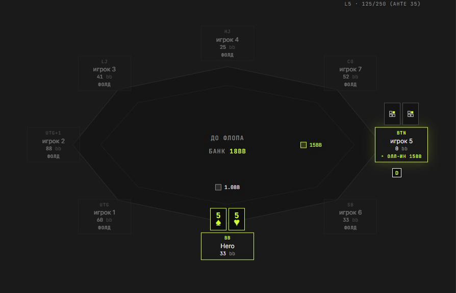

AI находит утечки в твоих турнирах и разбирает каждую спорную раздачу вместе с тобой — вопросами, а не готовым советом, чтобы ты сам увидел ошибку.
Без карты — первый турнир разбираем бесплатно
40 BB в стеке, у тебя A♠ J♠ на BTN. Ты 3-бетишь, BB коллирует.
Оппонент ставит весь банк на ривере. Ты коллишь.
Вопрос тренера
За что ты заплатил на ривере? Какие руки оппонента ты здесь бьёшь?
Потеря в раздаче
−18 BBПохожих решений за турнир
4Пунктир — раздача выше
эталонных чартов открыто на сайте — сверяйся бесплатно
чисел придумано моделью: считает детерминированный парсер
в месяц — дешевле одного часа с тренером
турнир разбираем бесплатно, без карты
/ 01 — Продукт
Настоящие экраны · не мокапы

Стол в точке решения: карманные пятёрки, олл-ин от BTN на префлопе — разбор начинается отсюда.
На вопрос о диапазоне отвечаешь прямо на сетке — парсер сам посчитает комбо и эквити.
Вердикт тренера
Ты прав: колл с 55 здесь выгоден. Если он пушит 20-25% рук, у пятёрок около 54% эквити при цене колла 44%. Проигрыш не делает колл ошибкой — это верный кулер, просто не повезло.
Настоящий вердикт из разбора
/ 02 — Ценность
03 блока · разный вес
Точные числа
VPIP, потери в фишках, позиция — считает детерминированный парсер. Числа всегда верные, ИИ их не выдумывает.
Метод
Тебя ведут к решению сократовскими вопросами — ты сам видишь ошибку и запоминаешь её.
Твоя игра
Не абстрактные споты из учебника, а конкретно те раздачи, которые ты сыграл сам.
Норма
Открытия по позициям, пуш-фолд, защита BB, 3-бет против опена, рестил, изоляция, сквиз. Всё, чем судит тренер, видно тебе — без регистрации.
/ 03 — Процесс
Три шага · один вечер
/01 — Загрузка
Зарегистрируйся и скинь HH-файл турнира с любого популярного рума — первый разберём бесплатно. Парсер пройдёт по каждой раздаче.
/02 — Вопрос
По паре самых спорных раздач тренер спросит, почему ты сыграл именно так — прежде чем дать оценку.
/03 — Разрыв
Сравнишь свой ответ с разбором — и сам увидишь, где твоя логика не совпала с тем, что случилось на столе.
/ 04 — Диалог
Пример · вопрос предшествует оценке
За что ты заплатил на ривере? Какие руки оппонента ты здесь бьёшь?
Думал, он может блефовать пропущенным дро — на тёрне у него было много бубён.
Хорошо, а какие бубновые дро дошли до ривера и не собрались? Ривер Q♦ закрыл почти все — блефовать ему теперь нечем. Посмотри на его линию: чек-колл, чек-колл, банк на ривере.
/ 05 — Доверие
Числа · норма · роль ИИ
01 — Числа
Эквити, пот-оддсы, ауты, размеры ставок, потери — всё считает детерминированный парсер по твоему файлу. Один расклад всегда даёт одно число.
02 — Норма
Открывашки сверяются с чартами — это среднее рабочих чартов автора и публичных MTT-источников, а не «из головы» модели.
03 — Роль ИИ
ИИ ведёт вопросами «почему ты так сыграл» и, если не уверен, честно переспрашивает — а не рубит категоричным советом.
Для микролимитного турнирного игрока (MTT) — того, кто играет каждый день, не готов платить за час коуча, но хочет разбирать каждый свой турнир на своих руках, а не примеры из учебника.
/ 06 — Сомнения
Три частых возражения
Дешевле одной разовой консультации. Один не слитый банк на дистанции окупает месяц подписки.
Не верь на слово. Загрузи турнир — первый разбор бесплатно, и суди по своим же раздачам.
Теорию ты знаешь. Вопрос в том, видишь ли ты свои повторяющиеся утечки на дистанции в десятки турниров — их и показывает разбор.
Посадочный талон
Первый турнир разберём бесплатно. Загрузи свой HH-файл — и сам увидишь, где сливаешь фишки, пока тренер ведёт тебя вопросами.